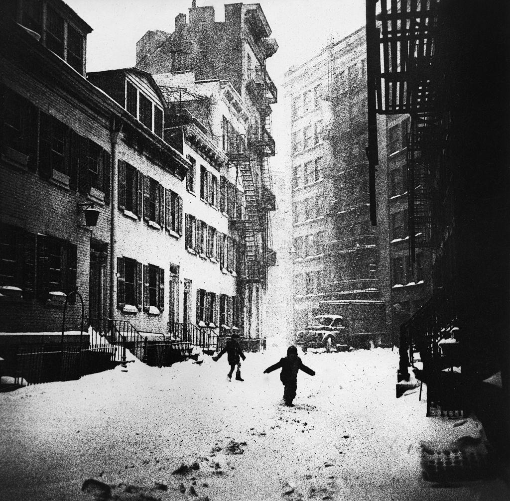

Avenue C at night, 1978
Avenue C at night, 1978
Play time on the lower east side, 1981

Playgrounds are a state of mind.
10th and B, late 80s

Clinton Street, 1982, WTC in the background

Going to play baseball, along the Hudson River; GW Bridge in the background.

Riverside Drive, 1960
The el, 1976

That’s one tough commute.
OP tagged 1970s
Ahoy
No token needed, 1983

HE3 in the lower east side, 1978
Chris 217, in the 33rd St station, circa 1980. He was a nice guy.
Madison and 73rd, 1985

Carvel in Chinatown, 1980
Snow plow, 1978
Times Square subway platform, 1980

“Sensitive meeting place”? LOL

Children play in the snow in Greenwich Village, New York City, 1960. Photograph by David Attie.
What's your favorite movie that takes place/filmed in New York City?
Hmmmm, the first one that came to mind was “King of New York”. Does “Escape From New York” count, or is that too fictional? “Do The Right Thing”, “Ghostbusters”, “Shaft”, “When Harry Met Sally”,… Fuck, there are too many.
Two-color RISK ONE piece, 1987

Tagged station, 1972

KRASH / DAZE pieces, 1980
Beautiful TACK piece, 1982
Early graffiti, 1972
High fashion, 1970s

Train yards, 1982

Not sexy. 42nd, near 5th, 1970s

Nobody was happy in the 70s. (Unless they were on coke.)

Fat marker Death Squad tag, 1977
FDT in the yards, 1975
Mackie, 1979. Love this piece.

PS 189 in Washington Heights, 1973
TAKI 183, 1970

‘Private Preview Booths’, New York City, circa 1978. Photograph by Andreas Feininger.
Valentine Avenue and Fordham Road in the Bronx, 1960s

Brighton Beach Avenue at Coney Island Avenue, 1980
Pelham Parkway near the Bronx River Parkway, 1972
TKTS, Times Square, 1973
The Mothers of Invention on Bleecker Street, 1967

1970s bus

Playground in Chinatown, 1977
The Limelight, before it was the Limelight, 20th St & 6th Ave, 1981
Duster / Apache, 1984
Uptown Finast, 1972

Graffiti near Bloomingdales in Queens, 1987

Traffic in Times Square, 1985
Are all these photos you took? Where do they come from? Loving it!
Hey, thanks! Most of the photos aren’t mine. I’m just a sort of NYC archaeologist, digging through the internet for cool photos.